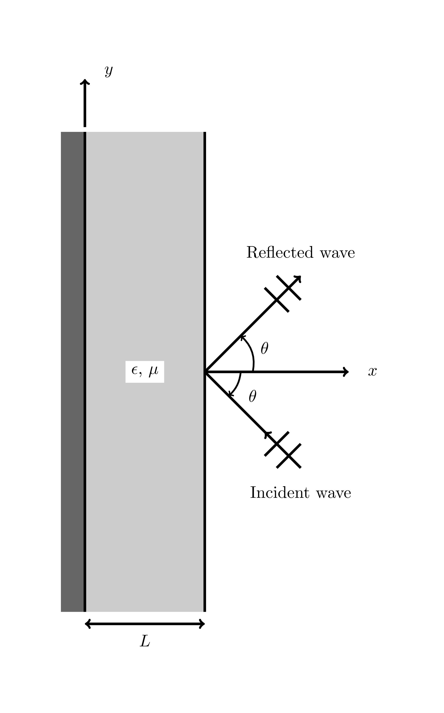
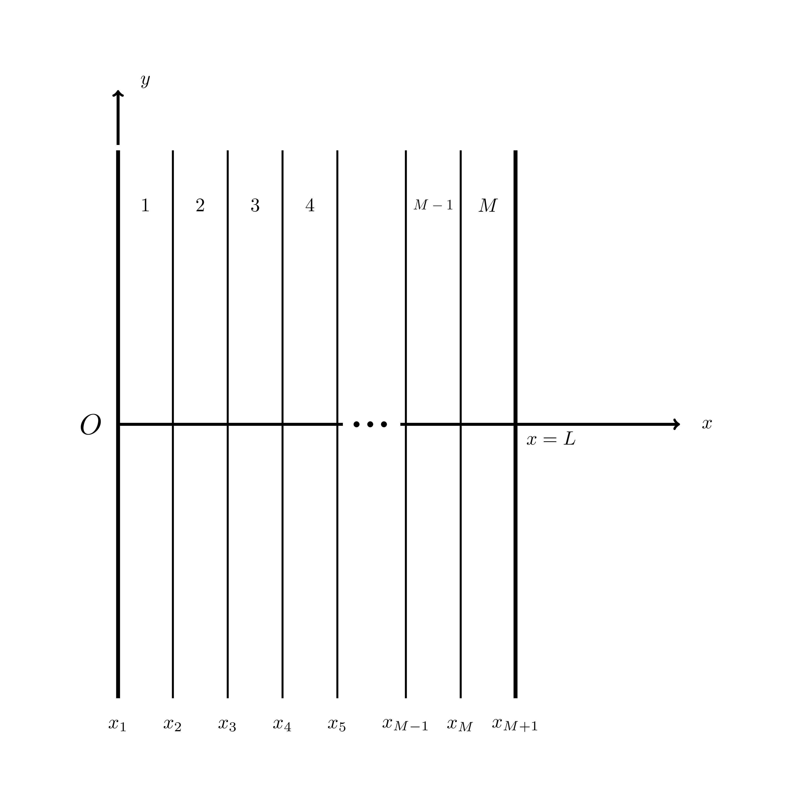
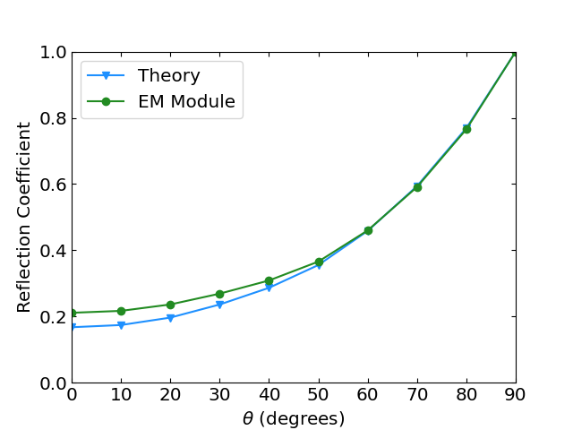

1D Reflection Benchmark
This document describes the 1D metal-backed dielectric slab benchmark / verification test for the electromagnetics module. This is based on Section 3.4 in (Jin, 2014). The goal of the benchmark is to accurately determine the power reflected by the slab when impinged by an electric plane wave, compared to an analytic solution. Below is a summary of the test, along with relevant background theory, results, and the test input file for review.
Model Geometry
The geometry used in this benchmark is shown below in Figure 1.

Figure 1: Slab reflection benchmark geometry.
Governing Equations and Boundary Condition
As described in (Jin, 2014), this benchmark models a uniform plane wave striking an inhomogeneous dielectric backed by a perfectly conducting grounded plane. The slab, shown in Figure 1, has a thickness , a relative permittivity , and a relative permeability . Both material properties are functions of position in the slab. The medium outside the slab is free space (). An -polarized plane wave is the incoming wave, and can be represented in general by
where
is the magnitude of the incident field,
is the wavenumber () where is the wavelength),
, and
is the incidence angle of the wave.
The general scalar Helmholtz equation governing the electric field in this scenario is given by
(1)The boundary condition on the conducting backing plane is given by
(2)which is implemented in code by DirichletBC and the boundary condition just inside the slab interface with free space is given by
which is implemented in code by EMRobinBC.
Model Parameters and Functions
The JinSlabCoeffFunc test function object (located in modules/electromagnetics/test/src/functions) is used in this benchmark to represent the coefficient shown in Eq. (1). The complex-valued function is
The relative electric permittivity in the model is defined as
and the relative magnetic permeability is defined as
Other model parameters are shown below in Table 1.
Table 1: Constant model parameters for the slab reflection benchmark study.
| Parameter (unit) | Value |
|---|---|
| Wave frequency (MHz) | 20 |
| Wavelength, (m) | 15 |
| Wavenumber, (1/m) | / |
| Slab thickness, (m) | 75 |
| Incident wave magnitude, (V/m) | 1 |
Analytic Solution for Reflection Coefficient
The analytic solution approach is outlined in (Jin, 2014), Section 3.4.2, but will be summarized here. First the slab in Figure 1 should be divided into thin layers as shown in Figure 2, and the analytic solution to the original Helmholtz equation in Eq. (1) in a single layer should be found.

Figure 2: Slab reflection benchmark geometry, cut into layers.
This solution can be shown to be
where and are unknown constant coefficients. Enforcing continuity across the layer interfaces in the direction, we can find the wave reflection coefficient for the interface between the th and th layer to be
where
Given the DirichletBC placed on the metal surface in Eq. (2), it can be found that . Thus, the analytic solution can be determined recursively for the desired number of layers. The coefficient reported below in Figure 3 represents the magnitude of the coefficient , over a range of frequencies on the dielectric interface.
ReflectionCoefficient object
The postprocessor object used in this benchmark to calculate the percentage of reflected power is described in more detail in the ReflectionCoefficient documentation. To summarize, the object evaluates the following expression:
which assumes -polarized plane waves as used in this benchmark. Because wave power is proportional to the magnitude of the wave squared, the coefficient reported below in the results section representing the percentage of reflected power is
Input File
# 1D metal backed dielectric slab benchmark (electric field edition)
# Based on Section 3.4 of Jin, "The Finite Element Method in Electromagnetics, 3rd Ed."
# frequency = 20 MHz
# eps_R = 4 + (2 - j0.1)(1 - x/L)^2
# mu_R = 2 - j0.1
# L = 5 * wavelength
k = 0.41887902047863906 # 2 * pi * 20e6 / 3e8
L = 75 # = 5 * c / freq. (in m)
E0 = 1 # magnitude of the incident field (in V/m)
theta = 0 # wave incidence angle, in degrees
[GlobalParams<<<{"href": "../../../syntax/GlobalParams/index.html"}>>>]
theta = ${theta}
[]
[Mesh<<<{"href": "../../../syntax/Mesh/index.html"}>>>]
[slab]
type = GeneratedMeshGenerator<<<{"description": "Create a line, square, or cube mesh with uniformly spaced or biased elements.", "href": "../../../source/meshgenerators/GeneratedMeshGenerator.html"}>>>
dim<<<{"description": "The dimension of the mesh to be generated"}>>> = 1
nx<<<{"description": "Number of elements in the X direction"}>>> = 100
xmin<<<{"description": "Lower X Coordinate of the generated mesh"}>>> = 0
xmax<<<{"description": "Upper X Coordinate of the generated mesh"}>>> = ${L}
[]
[rename]
type = RenameBoundaryGenerator<<<{"description": "Changes the boundary IDs and/or boundary names for a given set of boundaries defined by either boundary ID or boundary name. The changes are independent of ordering. The merging of boundaries is supported.", "href": "../../../source/meshgenerators/RenameBoundaryGenerator.html"}>>>
input<<<{"description": "The mesh we want to modify"}>>> = slab
old_boundary<<<{"description": "Elements with these boundary ID(s)/name(s) will be given the new boundary information specified in 'new_boundary'"}>>> = 'left right'
new_boundary<<<{"description": "The new boundary ID(s)/name(s) to be given by the boundary elements defined in 'old_boundary'."}>>> = 'metal vacuum'
[]
[]
[Variables<<<{"href": "../../../syntax/Variables/index.html"}>>>]
[E_real]
order<<<{"description": "Specifies the order of the FE shape function to use for this variable (additional orders not listed are allowed)"}>>> = FIRST
family<<<{"description": "Specifies the family of FE shape functions to use for this variable"}>>> = LAGRANGE
[]
[E_imag]
order<<<{"description": "Specifies the order of the FE shape function to use for this variable (additional orders not listed are allowed)"}>>> = FIRST
family<<<{"description": "Specifies the family of FE shape functions to use for this variable"}>>> = LAGRANGE
[]
[]
[Functions<<<{"href": "../../../syntax/Functions/index.html"}>>>]
[coeff_real]
type = JinSlabCoeffFunc
k = ${k}
length = ${L}
component = real
[]
[coeff_imag]
type = JinSlabCoeffFunc
k = ${k}
length = ${L}
component = imaginary
[]
[negative_coeff_imag]
type = JinSlabCoeffFunc
k = ${k}
length = ${L}
coef = -1
component = imaginary
[]
[cosTheta]
type = ParsedFunction<<<{"description": "Function created by parsing a string", "href": "../../../source/functions/MooseParsedFunction.html"}>>>
expression<<<{"description": "The user defined function."}>>> = 'cos(${theta})'
[]
[]
[Materials<<<{"href": "../../../syntax/Materials/index.html"}>>>]
[coeff_real_material]
type = ADGenericFunctionMaterial<<<{"description": "Material object for declaring properties that are populated by evaluation of Function object.", "href": "../../../source/materials/GenericFunctionMaterial.html"}>>>
prop_names<<<{"description": "The names of the properties this material will have"}>>> = coeff_real_material
prop_values<<<{"description": "The corresponding names of the functions that are going to provide the values for the variables"}>>> = coeff_real
[]
[coeff_imag_material]
type = ADGenericFunctionMaterial<<<{"description": "Material object for declaring properties that are populated by evaluation of Function object.", "href": "../../../source/materials/GenericFunctionMaterial.html"}>>>
prop_names<<<{"description": "The names of the properties this material will have"}>>> = coeff_imag_material
prop_values<<<{"description": "The corresponding names of the functions that are going to provide the values for the variables"}>>> = coeff_imag
[]
[negative_coeff_imag_material]
type = ADGenericFunctionMaterial<<<{"description": "Material object for declaring properties that are populated by evaluation of Function object.", "href": "../../../source/materials/GenericFunctionMaterial.html"}>>>
prop_names<<<{"description": "The names of the properties this material will have"}>>> = negative_coeff_imag_material
prop_values<<<{"description": "The corresponding names of the functions that are going to provide the values for the variables"}>>> = negative_coeff_imag
[]
[]
[Kernels<<<{"href": "../../../syntax/Kernels/index.html"}>>>]
[diffusion_real]
type = Diffusion<<<{"description": "The Laplacian operator ($-\\nabla \\cdot \\nabla u$), with the weak form of $(\\nabla \\phi_i, \\nabla u_h)$.", "href": "../../../source/kernels/Diffusion.html"}>>>
variable<<<{"description": "The name of the variable that this residual object operates on"}>>> = E_real
[]
[field_real]
type = ADMatReaction<<<{"description": "Kernel to add -L*v, where L=reaction rate, v=variable", "href": "../../../source/kernels/MatReaction.html"}>>>
reaction_rate<<<{"description": "The reaction rate used with the kernel"}>>> = coeff_real_material
variable<<<{"description": "The name of the variable that this residual object operates on"}>>> = E_real
[]
[coupled_real]
type = ADMatCoupledForce<<<{"description": "Kernel representing the contribution of the PDE term $mv$, where $m$ is a material property coefficient, $v$ is a coupled scalar field variable, and Jacobian derivatives are calculated using automatic differentiation.", "href": "../../../source/kernels/ADMatCoupledForce.html"}>>>
mat_prop_coef<<<{"description": "User-supplied material property multiplier for the coupled force term."}>>> = negative_coeff_imag_material
v<<<{"description": "The coupled variable which provides the force"}>>> = E_imag
variable<<<{"description": "The name of the variable that this residual object operates on"}>>> = E_real
[]
[diffusion_imag]
type = Diffusion<<<{"description": "The Laplacian operator ($-\\nabla \\cdot \\nabla u$), with the weak form of $(\\nabla \\phi_i, \\nabla u_h)$.", "href": "../../../source/kernels/Diffusion.html"}>>>
variable<<<{"description": "The name of the variable that this residual object operates on"}>>> = E_imag
[]
[field_imag]
type = ADMatReaction<<<{"description": "Kernel to add -L*v, where L=reaction rate, v=variable", "href": "../../../source/kernels/MatReaction.html"}>>>
reaction_rate<<<{"description": "The reaction rate used with the kernel"}>>> = coeff_real_material
variable<<<{"description": "The name of the variable that this residual object operates on"}>>> = E_imag
[]
[coupled_imag]
type = ADMatCoupledForce<<<{"description": "Kernel representing the contribution of the PDE term $mv$, where $m$ is a material property coefficient, $v$ is a coupled scalar field variable, and Jacobian derivatives are calculated using automatic differentiation.", "href": "../../../source/kernels/ADMatCoupledForce.html"}>>>
mat_prop_coef<<<{"description": "User-supplied material property multiplier for the coupled force term."}>>> = coeff_imag_material
v<<<{"description": "The coupled variable which provides the force"}>>> = E_real
variable<<<{"description": "The name of the variable that this residual object operates on"}>>> = E_imag
[]
[]
[BCs<<<{"href": "../../../syntax/BCs/index.html"}>>>]
[metal_real]
type = DirichletBC<<<{"description": "Imposes the essential boundary condition $u=g$, where $g$ is a constant, controllable value.", "href": "../../../source/bcs/DirichletBC.html"}>>>
value<<<{"description": "Value of the BC"}>>> = 0
variable<<<{"description": "The name of the variable that this residual object operates on"}>>> = E_real
boundary<<<{"description": "The list of boundary IDs from the mesh where this object applies"}>>> = metal
[]
[metal_imag]
type = DirichletBC<<<{"description": "Imposes the essential boundary condition $u=g$, where $g$ is a constant, controllable value.", "href": "../../../source/bcs/DirichletBC.html"}>>>
value<<<{"description": "Value of the BC"}>>> = 0
variable<<<{"description": "The name of the variable that this residual object operates on"}>>> = E_imag
boundary<<<{"description": "The list of boundary IDs from the mesh where this object applies"}>>> = metal
[]
[vacuum_real]
type = EMRobinBC<<<{"description": "First order Robin-style Absorbing/Port BC for scalar variables, assuming plane waves.", "href": "../../../source/bcs/EMRobinBC.html"}>>>
coeff_real<<<{"description": "Constant coefficient, real component."}>>> = ${k}
func_real<<<{"description": "Function coefficient, real component."}>>> = cosTheta
profile_func_real<<<{"description": "Function coefficient, real component."}>>> = ${E0}
boundary<<<{"description": "The list of boundary IDs from the mesh where this object applies"}>>> = vacuum
component<<<{"description": "Real or Imaginary wave component."}>>> = real
field_real<<<{"description": "Real component of field."}>>> = E_real
field_imaginary<<<{"description": "Imaginary component of field."}>>> = E_imag
variable<<<{"description": "The name of the variable that this residual object operates on"}>>> = E_real
sign<<<{"description": "Sign of boundary term in weak form."}>>> = negative
[]
[vacuum_imag]
type = EMRobinBC<<<{"description": "First order Robin-style Absorbing/Port BC for scalar variables, assuming plane waves.", "href": "../../../source/bcs/EMRobinBC.html"}>>>
coeff_real<<<{"description": "Constant coefficient, real component."}>>> = ${k}
func_real<<<{"description": "Function coefficient, real component."}>>> = cosTheta
profile_func_real<<<{"description": "Function coefficient, real component."}>>> = ${E0}
boundary<<<{"description": "The list of boundary IDs from the mesh where this object applies"}>>> = vacuum
component<<<{"description": "Real or Imaginary wave component."}>>> = imaginary
field_real<<<{"description": "Real component of field."}>>> = E_real
field_imaginary<<<{"description": "Imaginary component of field."}>>> = E_imag
variable<<<{"description": "The name of the variable that this residual object operates on"}>>> = E_imag
sign<<<{"description": "Sign of boundary term in weak form."}>>> = negative
[]
[]
[Postprocessors<<<{"href": "../../../syntax/Postprocessors/index.html"}>>>]
[reflection_coefficient]
type = ReflectionCoefficient<<<{"description": "CURRENTLY ONLY FOR 1D PLANE WAVE SOLVES. Calculate power reflection coefficient for impinging wave on a surface. Assumes that wave of form F = F_incoming + R*F_reflected", "href": "../../../source/postprocessors/ReflectionCoefficient.html"}>>>
k<<<{"description": "Wave number"}>>> = ${k}
length<<<{"description": "Domain length"}>>> = ${L}
incoming_field_magnitude<<<{"description": "Incoming field magnitude"}>>> = ${E0}
field_real<<<{"description": "The name of the real field variable this postprocessor operates on."}>>> = E_real
field_imag<<<{"description": "Coupled imaginary field variable."}>>> = E_imag
boundary<<<{"description": "The list of boundary IDs from the mesh where this object applies"}>>> = vacuum
outputs<<<{"description": "Vector of output names where you would like to restrict the output of variables(s) associated with this object"}>>> = 'csv console'
[]
[]
[Preconditioning<<<{"href": "../../../syntax/Preconditioning/index.html"}>>>]
[smp]
type = SMP<<<{"description": "Single matrix preconditioner (SMP) builds a preconditioner using user defined off-diagonal parts of the Jacobian.", "href": "../../../source/preconditioners/SingleMatrixPreconditioner.html"}>>>
full<<<{"description": "Set to true if you want the full set of couplings between variables simply for convenience so you don't have to set every off_diag_row and off_diag_column combination."}>>> = true
[]
[]
[Executioner<<<{"href": "../../../syntax/Executioner/index.html"}>>>]
type = Steady
solve_type = NEWTON
petsc_options_iname = '-pc_type'
petsc_options_value = 'lu'
[]
[Outputs<<<{"href": "../../../syntax/Outputs/index.html"}>>>]
exodus<<<{"description": "Output the results using the default settings for Exodus output."}>>> = false
csv<<<{"description": "Output the scalar variable and postprocessors to a *.csv file using the default CSV output."}>>> = true
print_linear_residuals<<<{"description": "Enable printing of linear residuals to the screen (Console)"}>>> = true
[]Results and Discussion
The input file shown above was swept over a range of angles from to , and the results for 100 elements compared to the analytic solution are shown below in Figure 3, where there is good agreement with the analytical solution. Jin also saw a deviation between the analytic solution and the finite element solution corresponding to smaller angles of incidence. They attributed this deviation to the idea that as increases, the magnitude of the coefficient in the second term of Eq. (1) decreases. In physical terms, this means that there will be slower field variation in the -direction as we approach , giving more consistent results between the two solutions. A 1D model might not be adequate to capture the reflection exactly with smaller .

Figure 3: Slab reflection benchmark results.
References
- Jian-Ming Jin.
The Finite Element Method in Electromagnetics.
John Wiley & Sons, Hoboken, New Jersey, USA, 3rd edition, 2014.[Export]